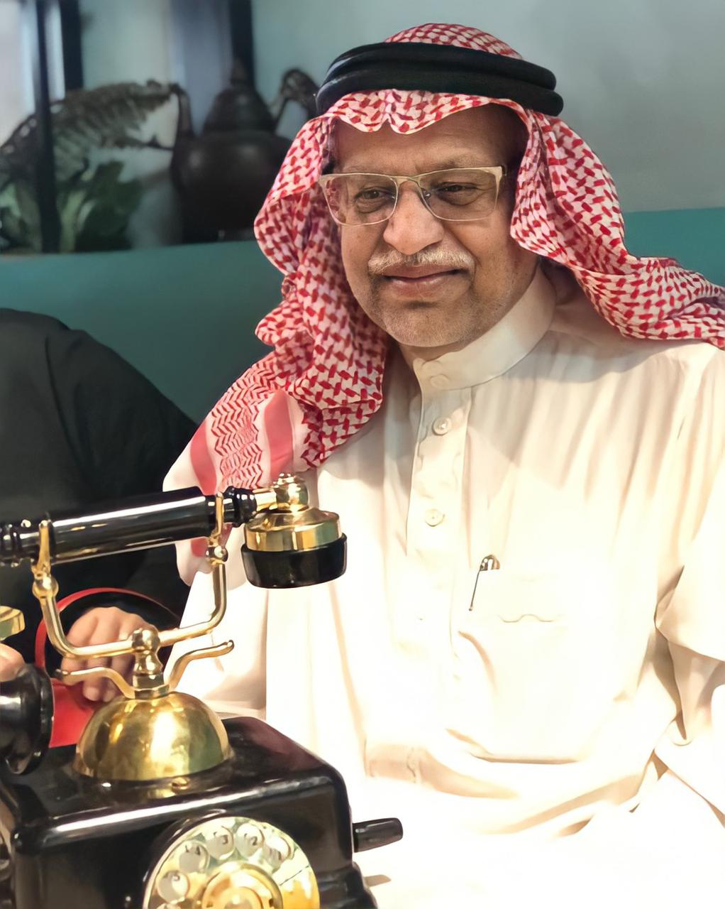

المستشار الدكتور مهندس بحري
عبد الرزاق بن هاشم المدني
الجنسيـــة: سعودي
تاريـخ الميـلاد: 1372 هـ -1953 م
مكـان الميــلاد: المدينة المنورة
يتشرف مكتب المستشار الدكتور مهندس بحري عبدالرزاق بن هاشم المدني والذي يعتبر مالكه اول سعودي يحصل على اعلى شهادة في مجال الهندسة البحرية من الاكاديمية العربية للنقل البحري بالإسكندرية بمصر منذ اكثر من 44 عاماً ،
كما حصل على عدة دبلومات و دورات تصل الى اكثر من 100 دبلوم و دورة في مجالات مختلفة وعلى مدى سنوات الخبرة والعمل لدى العديد من الشركات الكبرى مثل بترومين وسمارك و شركة ارامكو السعودية (26 سنة)

دورة في التخطيط وإعداد التكاليف بانجلترا .
حصل على شهادة تقدير عن مجهود المساهمة في عمليات درع وعاصفة الصحراء أثناء حرب تحرير الكويت من معالي وزير البترول والثروة المعدنية .
الاشتــــراك فـــي القائمـــة البــــريديــة